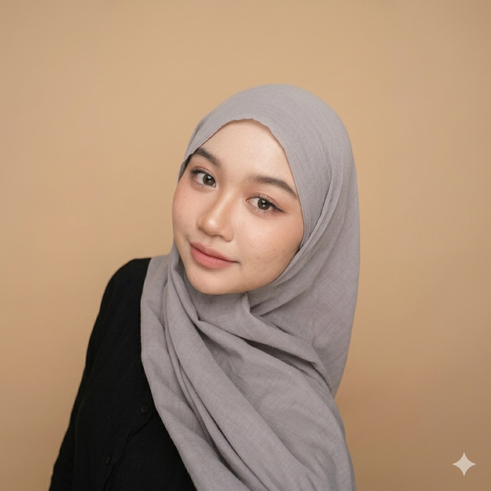

CCNA: Introduction to Networks
Cisco Networking Academy, offered by Universitas Binaniaga Indonesia.
2 Sep 2025*Beginner

Hello! I'm Vinita, but you can call me Vin. I am a recent graduate with a Bachelor's degree in Information Systems. During my studies, I enjoyed spending my free time listening to music and developing my skills. I have a strong interest in designing visually appealing website and mobile interfaces, particularly in UI/UX Design. Besides that, I also continue to develop my skills in Data Analytics. Throughout my academic journey, I have completed various projects, both academic and personal, which have helped me gain experience and continuously improve my abilities.
Possesses quick and critical thinking, creativity, effective verbal communication, a sense of responsibility, teamwork, leadership, decision making.
Possesses quick and critical thinking, creativity, effective verbal communication, a sense of responsibility, teamwork, leadership, decision making, public speaking.
Cisco Networking Academy, offered by Universitas Binaniaga Indonesia.
2 Sep 2025Maxy Academy × UNBIN, Certificate of Completion.
1 Aug 2026Badan Nasional Sertifikasi Profesi, Certificate of Competent for Junior Coder.
22 Sep 2026MySkill × JULO short class.
30 Aug 2023MySkill short class: UI/UX Research & Design.
16 Aug 2023International Webinar, UIN Syarif Hidayatullah Jakarta (Participant).
27 Jun 2025My Skill short class.
2 Oct 2025Tingkat Nasional Informatics Festival (IN-FEST) 2026, Universitas PGRI Semarang (Peserta).
17 Jun 2026HaKI (Hak Kekayaan Intelektual), Certificate of Registration.
15 Jul 2026In my free time, I enjoy improving my skills while doing things I love, such as designing UI/UX interfaces and coloring. I also use my spare time to explore and deepen my knowledge of various skills that I wish to develop further.
Mobile application for a movie streaming platform, with recommendations, favorites and a simple sign-in flow.
Mobile application for UMKM delivery: browse local food, order and pay in a few taps.
Healthy meal and nutrition tracking interface, designed for the hypertension risk grouping website.
My personal project: four graduation banner concepts, from denim stamps and vintage scrapbook to cartoon and locker-core styles.
Built during my internship to organize and manage neglected children’s data, making it easier to access, understand and analyze. Includes business process workflows designed with Enterprise Architecture.
My undergraduate thesis project. It helps Posbindu health cadres manage and classify community hypertension risk levels, so their daily tasks are easier and more efficient.
A website that helps sellers manage and showcase their products, expand their customer reach and simplify the sales process.
UI/UX Designer - Data Analyst - Frontend Developer